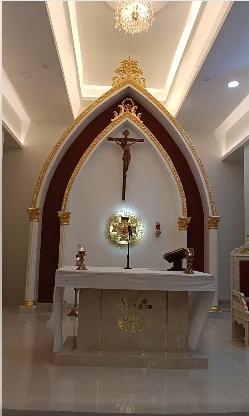

CAUCASIA, ANTIOQUIA
Escriba con honestidad lo que genera tempestad en su corazón.
Caballero, abra su corazón ante el Señor.
Para restaurar la llama que los unió en el noviazgo, es imperativo implementar la Pedagogía del Amor. Esto implica volver a las bases: el saludo cálido, el agradecimiento y el perdón rápido. Recuerden que la cortesía no es solo para los extraños; es para el cónyuge. Un matrimonio saludable sabe comportarse con caridad en medio de las dificultades, manteniendo siempre la dignidad y el respeto por el sacramento jurado ante Dios.
App desarrollada por: Vibras Positivas (3117700431)
Parroquia La Santísima Trinidad
Padre Joan Daza